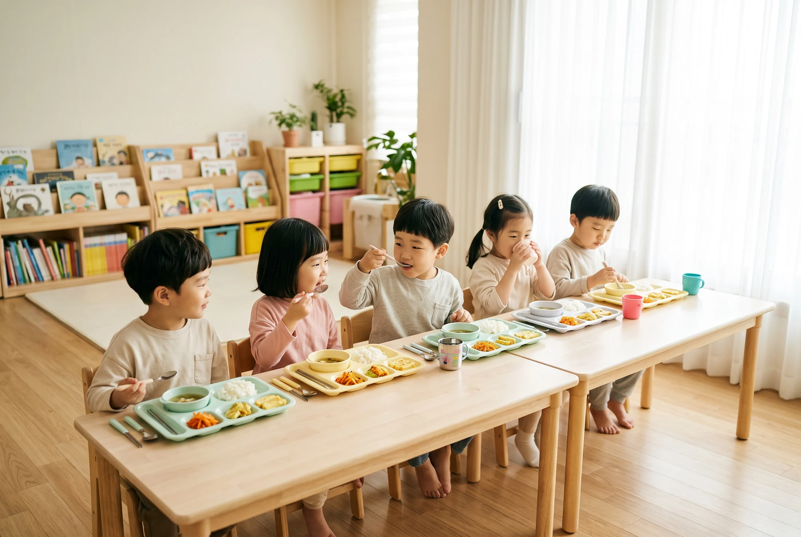
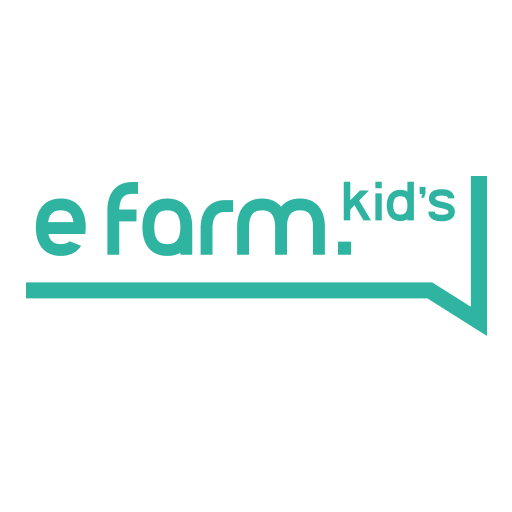
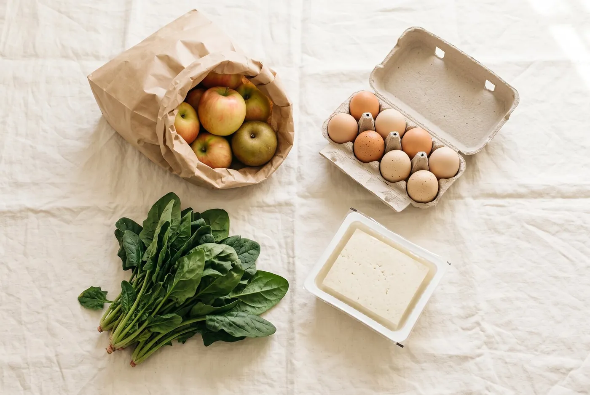
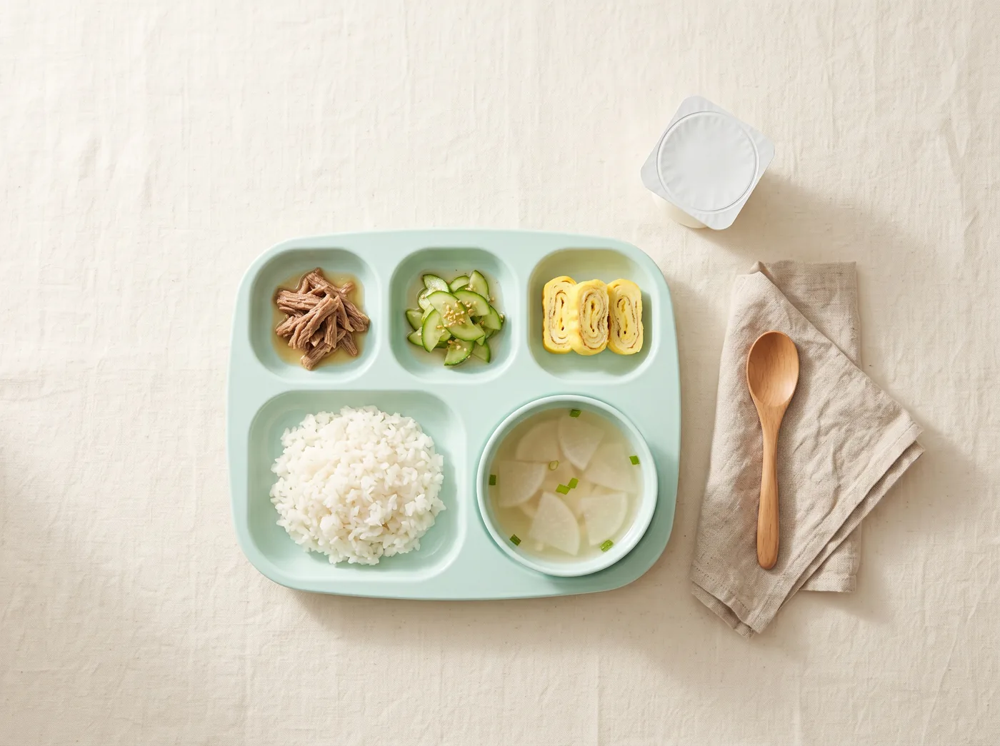

기다리고, 확인하고, 다시 묻는 일은 이제 그만하셔도 됩니다. 집행 기준과 일정을 상담 단계에서 먼저 안내해 드립니다.

전담 담당자 한 사람이 입금 확인부터 서류 안내까지 끝까지 맡습니다. 담당자가 바뀌면 다시 설명해야 하는 일을 없앴습니다.
동원홈푸드 자체 PB(이팜키즈 · be chef) 500여 종과 전국 물류망으로 예산 계획을 세우기 쉽게 돕습니다. 단가는 회차별로 갱신하며, 가격은 상담 시 안내합니다. 계약 후 영업일 5일 이내 발주가 가능하며, 소규모 시설과 초등 돌봄교실도 공급 상담이 가능합니다.

영유아 전용 브랜드 · 친환경·무항생제 상품도 운영
동원홈푸드 영유아 전용 브랜드 이팜키즈로 식단부터 간식까지 한 흐름으로 제안합니다. 1식 · 1국 · 4찬을 이츠밀의 참고 기준으로 삼되, 센터마다 기준이 다르니 시설에 맞춰 조정합니다.

납품부터 정산까지 기록이 남으니, 서류 준비에 쓰는 시간이 줄어듭니다. 제공되는 서류 항목은 계약 형태와 시설 환경에 따라 달라질 수 있습니다.
네 가지 약속은 회의실에서 만든 문장이 아니라,
상담에서 자주 나오는 질문을 정리한 것입니다.